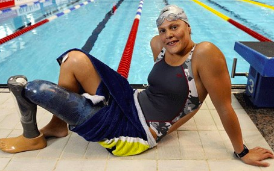

Biography
Natalie du Toit is a disabled athlete from Cape Town, South Africa. Natalie was born on January 29, 1984. Natalie is known for her swimming career. She was one of the two people to compete at the Summer Olympics in 2008 in Bejing. She began swimming at a very young age and she discovered her talent. Natalie was a competitive swimmer, who sadly had to get her left leg amputated at the knee at age seventeen, because she was hit by a car, while she was on a scooter. Three months after her amputation, she began to start swimming again. Although this was a major setback for her, she never gave up on her dream, to compete in the Olympics and the Commonwealth games.
It’s important to swim your own race.
Natalie broke many records and won many medals in her career. She was the first female with an amputation to ever qualify for the Olympic competition, who was also competed by able-body swimmers. She was very persiverent and never gave up. Once she swam her last event, she said, “I look back and realise I gave everything in the pool and gave everything as a person. It’s time to move on. I’ve no idea what’s next.” Natalie is an inspiration to all women and should never be forgotten.
Natalie is known for her swimming career. She was one of the two people to compete at the Summer Olympics in 2008 in Bejing. She one the award Laureus World Sports Awards for Sportsperson of the Year with a Disability. No only was she an inspiration in the pool, but she inspired many people and encouraged them to never give up, no matter what. Natalie knew that she could do anything, if she just gave it her all. If you want more information, go to Natalie du Toit and Inspirational Story.